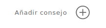

<ion-content [fullscreen]="true">
  <div class="container"> 
    
      
    
        <app-superior [notificationRoute]="'/notificaciones'" [backRoute]="'/notificaciones'"></app-superior>
        
        <h3 class="center"><strong>Título Tratamiento</strong></h3>
    <div class="bottom-section" style="max-height: 70vh;">
     
      <div class="button-container">
        <button class="pretratamiento-button">Pretratamiento</button>
        <button class="postratamiento-button">Postratamiento</button>
      </div>

     

      <app-iconos2
      [iconNames]="['A', 'B', 'C', 'D']"
      [routeA]="'/protocolo-asignado-paciente'"
      [routeB]="'/protocolo-asignado-paciente1'"
      [routeC]="'/protocolo-asignado-paciente2'"
      [routeD]="'/protocolo-asignado-paciente3'"
    ></app-iconos2>
   

      <h3 class="faq-text"><strong>Consejos del tratamiento</strong></h3>
      
  

        <app-protocolo
        [subHeading]="'¡No tomes el sol!'"
        [cardText]="'Por lo menos durante una semana <br> procura no exponerte al sol '"
       
        [cardButtonContent]="'¿Qué dia se notifica?'"
       [smallButtonContent]="'Dia 1'"
      ></app-protocolo>

      <app-protocolo
      [subHeading]="'Recuerda tomar antibioticos'"
      [cardText]="'Cada 8h tomate el antibiotico que <br> te receté y si tines dolor puedes <br> tomar antinflamatorios  '"
     
      [cardButtonContent]="'¿Qué dia se notifica?'"
     [smallButtonContent]="'Dia 3'"
    ></app-protocolo>
        
        <div class="centered-image">
          
        </div>
        
        <div class="floating-button-container">
          <app-button
            [content]="'Guardar protocolo'"
            [color]="''" 
            [backgroundColor]="''"
            [position]="'center'"
            [redirect]="'/anadir-crear-protocolo'"
          ></app-button>
        </div>
    </div>


    
  </div>

  <app-custom-tab-bar [tabs]="tabs" 
[iconStyles]="iconStyles" 
[router]="router" 
[tabRoutes]="tabRoutes"
 ></app-custom-tab-bar>
  
</ion-content>


